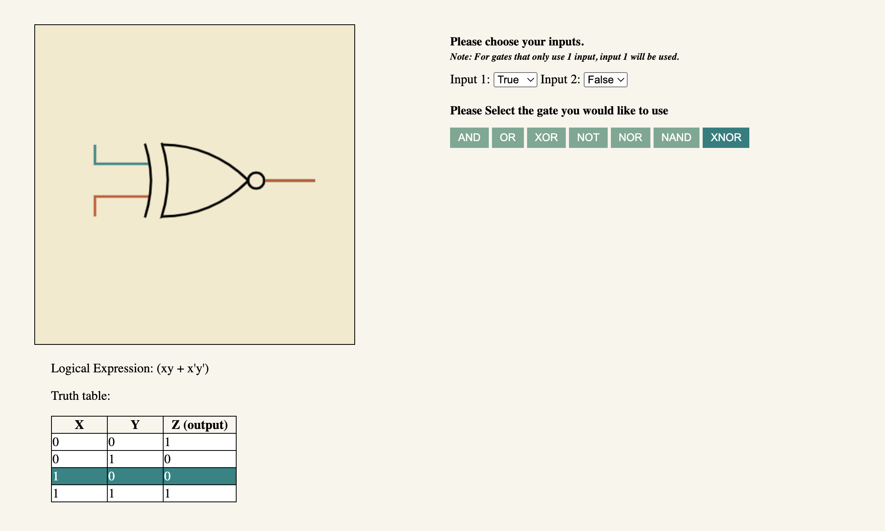

I developed this web app to assist in the learning and understanding of boolean logic gates. I sought to create this after I watched many of my classmates fail to grasp the concepts in class. After talking to some of them, I gathered that a simulator tool for boolean logic gates would drastically increase their confidence in the material. Thus I created this web app to be readily accessible to any student in need.
The website's controller is shown above.
The features of the website are a visual aid, a logical expression, and a truth table for each logic gate. I chose to include these as it is the most common representations of logic gates.